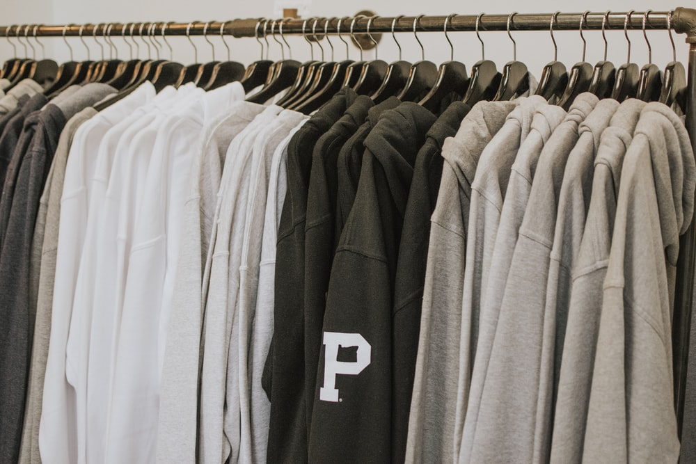
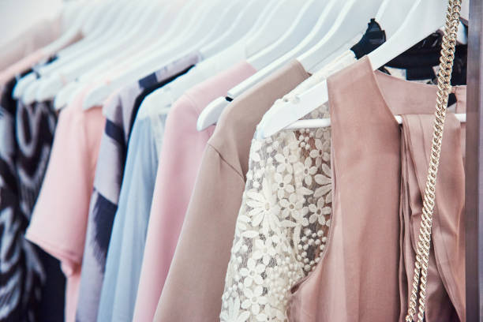
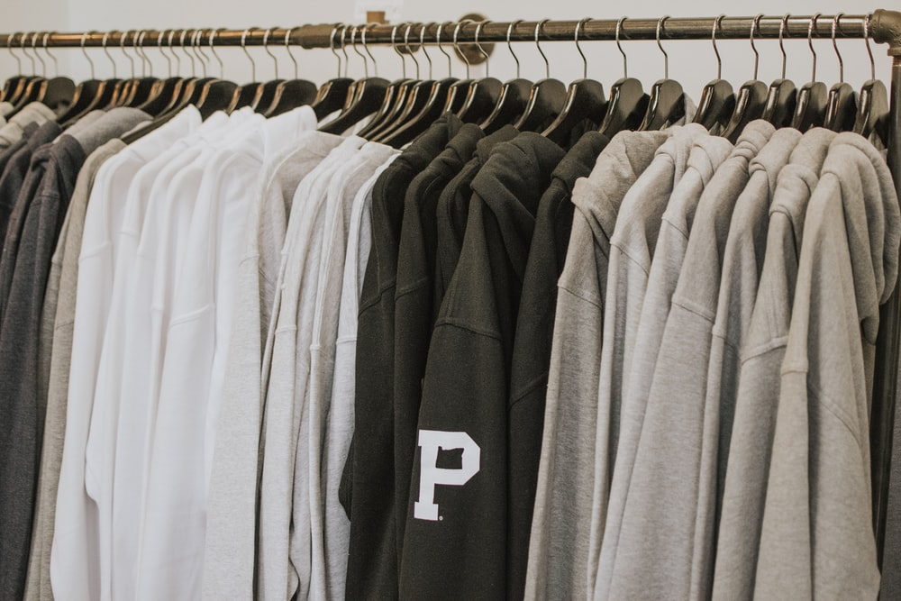
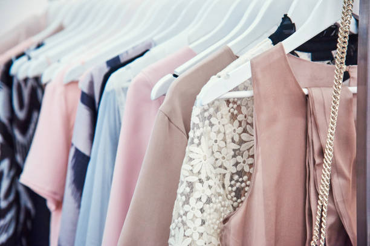

FASHION FACTS
- People who dress like their boss get a promotion quicker.
- Men are more likely to ask a woman out if she is wearing red.
- People temporarily boost their IQ wearing a white coat. It only works if they believe it’s a doctor’s, not a painter’s coat.
- During ovulation, women dress more provocatively.
- 92% of the women own at least one clothing item they have never worn.
- Runners greet more often other runners who wear similar kit.
- Wearing all-one-colour makes the body appear slimmer.
- People subconsciously stand further away from those wearing unfashionable clothes.
- Women wear jeans twice more often when depressed rather than when happy.
- Provocatively dressed women are perceived as being less competent.
- Wearing black makes you look thinner
- Wearing white makes you look fresh and soft
- Patterned fabrics make the body appear larger.
Back to home
 


